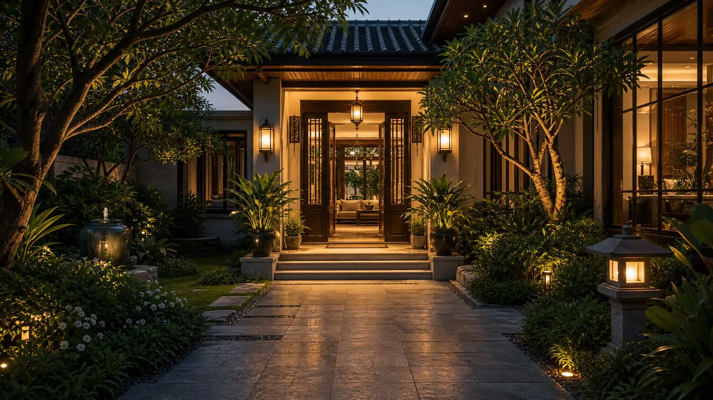
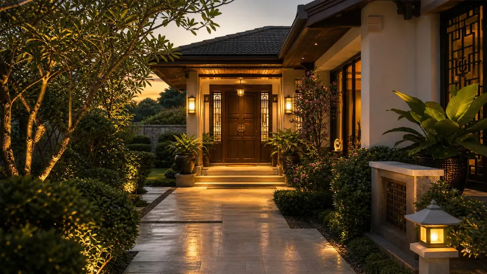
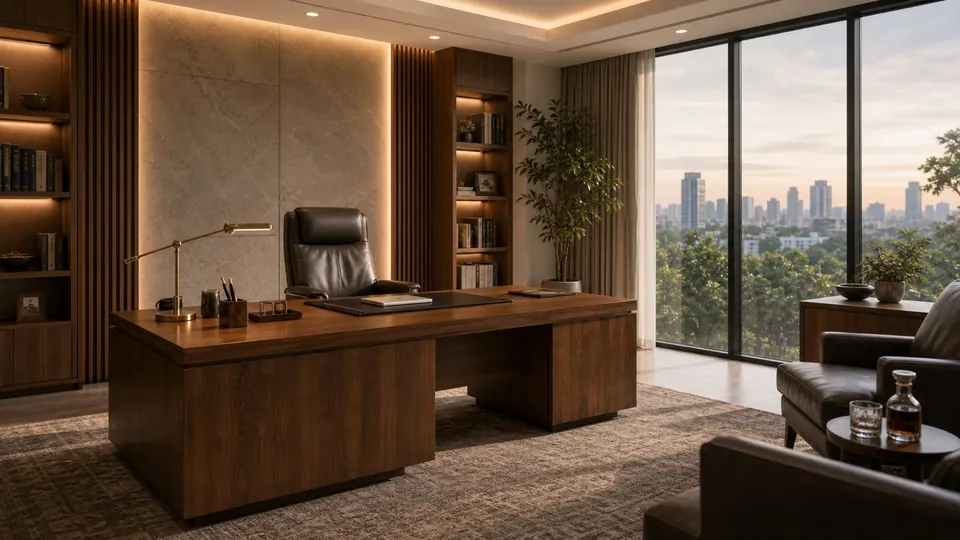
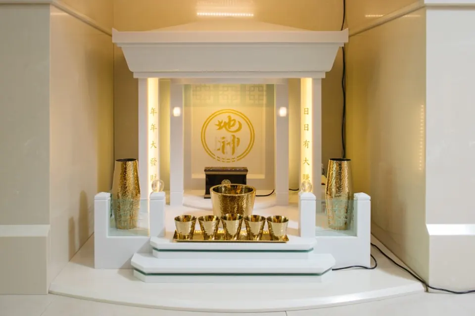
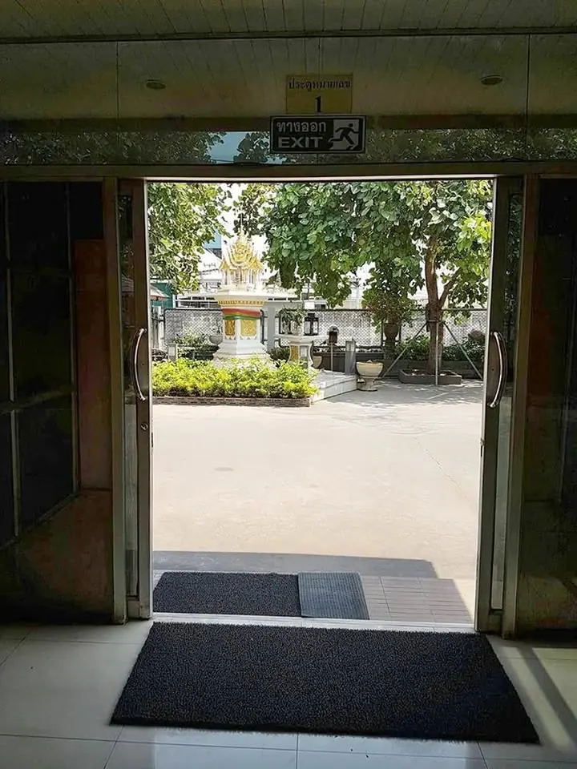
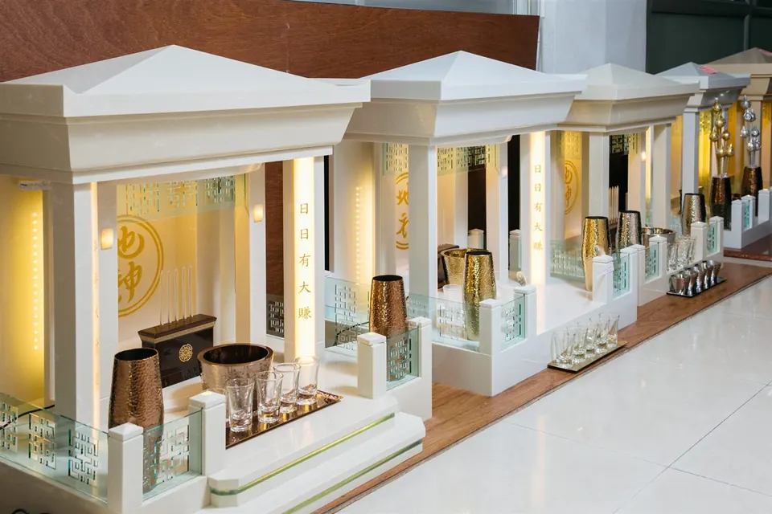
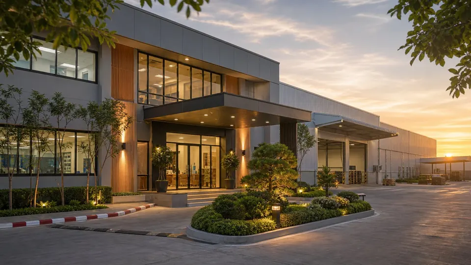
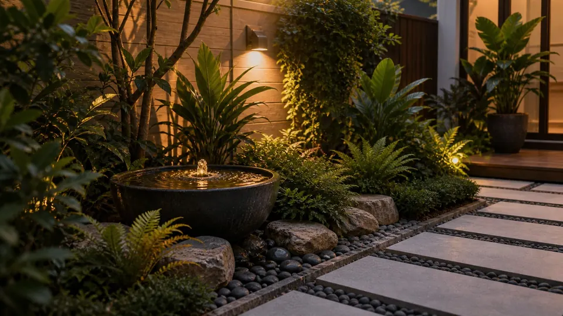
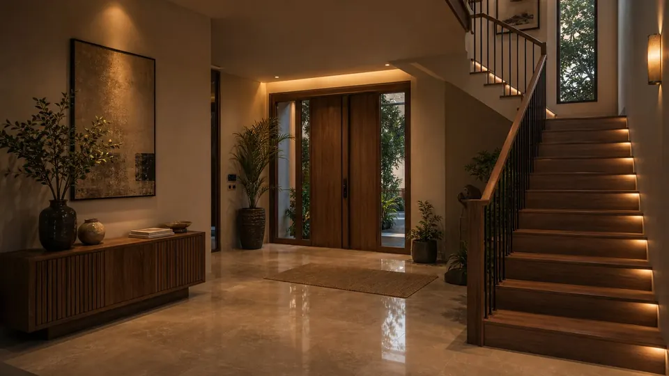
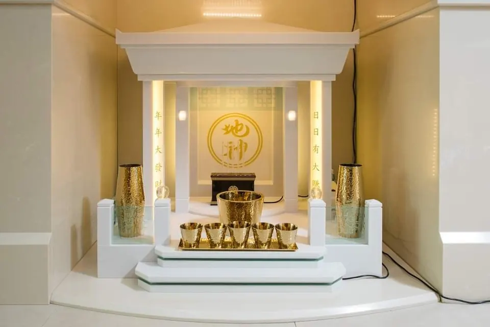

Experience
30+ yearsFengshui practice built on real site work

Fengshui Balance
ดูฮวงจุ้ยบ้าน ธุรกิจ ออฟฟิศ และโรงงาน วิเคราะห์ทิศทาง องศา และโครงสร้างจากพื้นที่จริง โดย อาจารย์สุภชัย วิวัฒนะประเสริฐ ประสบการณ์กว่า 30 ปี
ส่งแปลนหรือรูปหน้าบ้าน เพื่อให้ทีมงานประเมินเบื้องต้นก่อนนัดตรวจ
Experience
30+ yearsFengshui practice built on real site work
Community
161k+Fengshui Balance followers
Service
TurnkeyGuidance through completion
Method
Evidence-ledLayout, direction, timing, destiny
Fengshui guided by nature, built for real life
Balancing landform, direction, timing, and real daily use.
ขอบเขตการปรึกษา

วางแผนบ้านใหม่ บ้านที่อยู่อาศัยจริง ห้องนอน ทางเข้า ครัว สวน และการปรับแก้ที่สอดคล้องกับการใช้ชีวิตของครอบครัว

ให้คำแนะนำออฟฟิศ ร้านค้า คลินิก โรงงาน โรงแรม และโครงการเชิงพาณิชย์ โดยดูตำแหน่งทีม ทางเข้า โลโก้ และการทำงานจริง

ตำแหน่ง ทิศทาง ขนาด ฤกษ์ ขั้นตอนการไหว้ และความปลอดภัยในการตั้งศาลและตี่จู้
วิเคราะห์ดวงจีน แนวโน้มรายปี ฤกษ์มงคล และการเลือกทิศทางร่วมกับผังพื้นที่

แนวทางของอาจารย์สุภชัย
เข้าใจเจ้าของพื้นที่ ประเภทอาคาร วิถีชีวิต และเป้าหมายธุรกิจก่อนเสนอแนวทางปรับแก้
ตรวจชัยภูมิ ทิศทาง ผังห้อง ทางเข้า โต๊ะทำงาน ตำแหน่งพระหรือศาล และข้อจำกัดหน้างาน
เลือกแนวทางที่แก้ง่ายและได้ผลก่อน หลีกเลี่ยงการทุบ รื้อ หรือรบกวนพื้นที่หากไม่จำเป็น
เคสจริงจากหน้างาน

โรงงาน · กาฬสินธุ์
ตรวจทิศทาง ผัง และโครงสร้างจากหน้างานจริง — อ่านบันทึกเคสฉบับเต็ม
อ่านเคสนี้ →
บ้าน · ออฟฟิศ
บันทึกงานปรับฮวงจุ้ยบ้านและออฟฟิศ ตามหลักวิชา ทีละขั้นตอน
อ่านเคสนี้ →พื้นที่ของคุณ
ส่งแปลนหรือรูปหน้าบ้านทาง Inbox เพื่อให้ทีมงานประเมินเบื้องต้น
ทัก Inbox →แนวทางการให้คำปรึกษา



สายวิชาและความเคารพ
อาจารย์สุภชัยศึกษาวิชากับ อาจารย์ เกรียงไกร บุญธกานนท์ ปรมาจารย์ฮวงจุ้ยที่ได้รับความเคารพ และเกี่ยวข้องกับมูลนิธิฮูลิน ส่วนนี้จึงจัดวางให้เห็นที่มาของสายวิชาอย่างชัดเจน


คลังความรู้
บทความแนะนำ
กระดาษแดงเทียงเถ่าจี้ กระถางธูป ขนาดเรือน และตำแหน่งตี่จู้ — คำแนะนำจากเคสจริง
โพสต์ยอดนิยมจากคลังความรู้ Fengshui Balance
พลังงานปีมะเมียไฟ 2569 และสิ่งที่เจ้าของบ้านควรรู้
แบรนด์ในเครือ
นอกจาก Fengshui Balance อาจารย์สุภชัยยังก่อตั้ง Aviva Spirit และ Miracles369 — ต่อยอดแนวคิดสมดุลและพลังงานธรรมชาติสู่ผลิตภัณฑ์ที่ใช้งานได้จริง
Consultation · Nature-balanced Fengshui
Modern luxury Fengshui for homes, business, spirit-house placement, and Chinese astrology — guided by Ajarn Suppachai.
View services →
Modern Luxury · Since 2012
Patented modern marble spirit houses and teeju — Fengshui-led design for contemporary homes.
Visit avivaspirit.com →Universal Energy · Wellness
Natural energy products for balance, rest, vitality, and everyday wellbeing.
Visit miracles369-store.com →คำถามที่พบบ่อย
เตรียมแปลนบ้านหรือผังพื้นที่ รูปถ่ายหน้าบ้านหรือตัวอาคาร และข้อมูลวันเกิดของเจ้าของพื้นที่สำหรับวิเคราะห์ร่วมกับดวงจีน ส่งผ่าน Facebook Inbox เพื่อให้ทีมงานประเมินเบื้องต้นก่อนนัดหมาย
ได้ทั้งสองกรณี บ้านที่อยู่ระหว่างออกแบบสามารถวางผังตามหลักฮวงจุ้ยได้ตั้งแต่ต้น ทำให้ปรับได้ง่ายโดยไม่ต้องทุบหรือแก้ไขโครงสร้างภายหลัง ส่วนบ้านที่สร้างแล้วจะวิเคราะห์จากสภาพจริงและเลือกแนวทางที่แก้ง่ายที่สุดก่อน
รับดูฮวงจุ้ยทั่วประเทศ ทั้งการลงตรวจพื้นที่จริงและการประเมินเบื้องต้นจากแปลนและรูปถ่ายผ่านช่องทางออนไลน์ สอบถามคิวแต่ละจังหวัดได้ทาง Inbox
ไม่จำเป็น แนวทางของอาจารย์สุภชัยคือเลือกวิธีที่แก้ง่ายและได้ผลก่อน เช่น การปรับตำแหน่ง ทิศทาง หรือการใช้งานพื้นที่ จะแนะนำให้แก้ไขโครงสร้างเฉพาะกรณีที่จำเป็นจริง ๆ
ครอบคลุมทิศทางอาคาร ทางเข้า ตำแหน่งห้องผู้บริหาร ผังที่นั่งทีมงาน ตำแหน่งโกดังหรือไลน์ผลิต โลโก้ และฤกษ์สำหรับงานสำคัญ โดยวิเคราะห์จากพื้นที่จริงประกอบการใช้งานของธุรกิจ
ขั้นตอนถัดไป
ส่งแปลนพื้นที่ รูปถ่ายหน้าบ้านหรือตัวอาคาร และช่วงเวลาที่สะดวกผ่าน Inbox — ทีมงานประเมินเบื้องต้นและตอบกลับทุกข้อความ